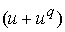

|
В. И. ЕЛИСЕЕВ ВВЕДЕНИЕ В МЕТОДЫ ТЕОРИИ
ФУНКЦИЙ ПРОСТРАНСТВЕННОГО КОМПЛЕКСНОГО ПЕРЕМЕННОГО |
|
Продолжение 2 из 3. 8.9. Вычисление масс микрочастиц по кварковым композициям и модам распада. Вычисление квантовых чисел микрочастиц, исследование связи спина, изоспина, четности с величиной массы микрочастицы. Реализация квантовой СРТ-теоремы. Исследование закона не сохранения четности.
Аналогично имеем
Такая комбинация глюонного поля дает массу частицы
Мэв.Расхождение составляет 35 %., так как имеем несоответствие с квантовыми числами частицы.
Глюонное поле частицы определим при замене кварка
.Вычисление массы дает величину
Мэв. Расхождение равно 9 %. Cпин равен нулю, так как весовой коэффициент глюонного поля равен нулю. Изоспин равен . Формула расчета дает точное соответствие экспериментальным данным.
Это глюонное поле соответствует квантовым числам и дает массу микрочастицы
Мэв. Расхождение составляет 14,7 %. Глюонное поле имеет спиновую составляющую, удельный вес которой равен 0,099Мэв, и значительно ниже точности измерения массы самой частицы Мэв. Это дает основание не учитывать влияние этой величины. Изоспин равен
Если кварк
заменить на кварк , получим . Вычисление массы микрочастицы дает величину Мэв. Расхождение составляет 2,2 %. Однако это барион по своим квантовым числамТаким образом, вычисления показывают зависимость квантовых чисел микрочастиц и их масс от структуры глюонного поля и принадлежности этих частиц по классификации на мезоны, барионы и так далее.
Каоны.
Кварковые композиции каонов
при замене кварка S на кваркв полном соответствии с экспериментальными модами распада.
Кварковые композиции дают выражения для суммарных глюонных полей. Для
Этому глюонному полю соответствует масса частицы
Мэв. Расхождение составляет 10,9 %.Для
имеемЭто глюонное поле соответствует массе
Мэв. Расхождение составляет 11,4 %. Расхождение между вычислениями масс отрицательного и положительного каона составляет 0,38 %.Вычисления глюонных полей показывают, что если в кварках
произвести замену знаков электрического и лептонного глюонного поля то есть применить теорему. Эта операция произойдет внутри микрочастицы. В этом случае массы микрочастиц совпадут, та как глюонное поле будет выражаться для них одинакого.
Глюонное поле лептонного и электрического заряда малы. Поэтому величина изоспина зависит только от заряда кварка S, так что микрочастицы имеют квантовые числа .
Кварковая композиция нейтрального каона
. Эта композиция дает 2-х пионную моду распада и трех пионную. Исследуем этот экспериментальный факт.. Эта мода распада закреплена за
Глюонное поле равно
При образовании нейтрального пиона глюонные поля лептонного и электрического заряда аннигелируют на величину глюонного поля равную
, что по массе составляет 177,65 Мэв. Величина превышающая массу нейтрального пиона. В связи сэтим поворот одновременно электрического и лептонного полей в нейтральном пионе вызовет изменение массы частицы и ее квантовых чисел до величин
 . Глюонное поле будет равно
. Глюонное поле будет равно
Это дает массу частицы равную 764,29 Мэв. Этой массе и квантовым числам отвечает
-мезон. При кварковой комбинации  глюонное поле аннигилирует на величину
глюонное поле аннигилирует на величину
. Эта величина в микрочастице дает увеличение массы и превращение нейтрального пиона в другую частицу с глюонным полем
, которое дает массу 872, 66 Мэв. Эта величина и квантовые числа соответствуют частице .
Так как каон может иметь две такие коррекции, то его глюонное поле можно представить в виде
, которая определяет массуМэв. Расхождение составляет 6,2 %.
Так как, величина энергии аннигиляции соизмерима с энергией нейтрального пиона, то при образовании нейтрального каона возможен вариант глюонного поля в виде
, что дает массу частицы  Мэв. Расхождение составляет 1,5 %.
Мэв. Расхождение составляет 1,5 %.
Квантовые числа этой частицы равны  . В физике микрочастиц распад каона на два пиона и на три пиона вырос в проблему нарушения четности. Вычисления показывают, что это обычный процесс происходящий при взаимодействии полей при образовании микрочастиц.
. В физике микрочастиц распад каона на два пиона и на три пиона вырос в проблему нарушения четности. Вычисления показывают, что это обычный процесс происходящий при взаимодействии полей при образовании микрочастиц.
Кварковая композиция положительного каона  дает следующее выражение для вычисления глюонного поля микрочастицы , но по введенной системе
дает следующее выражение для вычисления глюонного поля микрочастицы , но по введенной системе  , поэтому используя выражения для кварков из 9,5 будем иметь.
, поэтому используя выражения для кварков из 9,5 будем иметь.
. Расчет массы для этого глюонного поля дает величину 586 Мэв, которая отличается от экспериментальной 494 Мэв на 18 %.
Глюонное поле положительного каона можно откорректировать за счет спина кварка заменив его на кварк
Тогда глюонное поле кварка выразится в виде
. Вычисление массы для этого глюонного поля дает величину 482,23 Мэв. Расхождение с экспериментальной массой составляет 2,4 %.
Изменение величины весового коэффициента возможно в следствии равенства масс единичного лептонного глюонного вихря разных зарядов.
Отрицательный каон имеет кварковую композицию
Глюонное поле через весовые коэффициенты выразится в виде
. Для этой композизиции глюонного поля масса микрочастицы равна 559,78 Мэв и отличается от экспериментальной массы на 13 %.
Здесь также возможна корректировка глюонного поля за счет спина кварка , заменив его кварком
.
При такой замене будем иметь глюонное поле
Нейтральный каон
имеет кварковую комбинациюТаким образом, глюонное поле имеет вид
,вычисления по которому дают массу микрочастицы 558,71 Мэв, которая отличается от экспериментальной массы равной 498 Мэв на 12 %.Возможен вариант рассмотрения глюонного поля нейтрального каона как полу суммы глюонных масс положительного и отрицательного каонов
, что соответствует массе 481,54 Мэв и расхождение составляет 4,3 %.
Из кварковой композиции микрочастицы имеем весовые коэффициенты глюонного поля и самого поля в виде
Имеем массу микрочастицы
Мэв. Экспериментальная масса равна 547 Мэв.Расхождение составляет 2,4 %.
Далее рассмотрим частицу
кварковые композиции соответственно имеют вид На этой композиции проверяется введенная систематизация кварков, по которой , тогда подтверждаются экспериментальные моды распада частиц,
а также второй вариант
Конкретные моды распада для этимх частиц не установлены. Энергетический расчет дает вариант
Масса глюонного поля такого распада будет соответствовать Вычисление массы дает величину Мэв.Аналогично обстоят дела и сдругими видами микрочастиц этой серии. Расхождение расчетов составляет от 8 до 14 %.
Система
отвечает кварковой композиции микрочастицы с массой 3097 Мэв. Откорректированное глюонное поле по нейтральному пиону дает . Вычисления дают массу частицы Мэв против экспериментальной величины 3097 Мэв. Расхождение составляет 9,4 %.Мезон с массой 9460 Мэв имеет кварковую композицию
. Замена кварка (введено в классификацию кварков), дает глюонное поле в виде. Вычисление массы кварка дает значение Мэв.
Моды распада частицы В не приводятся конкретно. Кварковая композиция показывает, что аннигиляция внутри системы  создает поле частицы как . Так, что глюонное поле микрочастицы . Вычисление массы дает величину
Мэв. Экспериментальная масса равна 5279 Мэв. Расхождение составляет 2 %.
-Гиперон имеет кварковую композицию . Замена кварка его композицией  дает кварковую композицию Гиперона, которая объясняет моду распада . Замена кварков на их комбинации из единичных глюонных полей и весовых коэффициентов дает выражение для суммарного глюонного поля гиперона
дает кварковую композицию Гиперона, которая объясняет моду распада . Замена кварков на их комбинации из единичных глюонных полей и весовых коэффициентов дает выражение для суммарного глюонного поля гиперона
Это глюонное поле гиперона соответствует массе
Мэв. Эта величина отличается от экспериментальной равной 1115,6 Мэв на 52 %. В связи с этим произведем две коррекции кваркаМини оглавление:
[0], [1.1.1, 1.1.2, 1.1.3, 1.1.4, 1.1.5, 1.1.6, 1.1.7, 1.1.8, 1.2, 1.2.1, 1.2.2, 1.2.2.a, 1.2.2.b, 1.2.2.c, 1.2.2.d, 1.2.2.e, 1.2.2.f, 1.2.2.g, 1.2.2.h, 1.2.3, 1.3.1, 1.3.2, 1.3.3, 1.3.4, 1.3.5, 1.3.6, 1.4.1, 1.4.2, 1.5, 1.6, 1.7.1, 1.7.2, 1.7.3.1, 1.7.3.2, 1.7.3.3, 1.7.4.1, 1.7.4.2, 1.8.1], [2.1, 2.2],[3.1, 3.2, 3.3, 3.4.1, 3.4.2, 3.4.3, 3.4.4, 3.4.5],[4.1, 4.2, 4.3, 4.4],[5.1, 5.1.Рис.52, 5.2, 5.3, 5.4, 5.4.Т1, 5.4.Т2, 5.4.Т3, 5.5.1, 5.5.2, 5.5.3, 5.5.4],[6.1.1, 6.1.2, 6.2.1, 6.2.2, 6.2.3, 6.2.4, 6.2.5, 6.3, 6.4.1, 6.4.2, 6.5.1, 6.5.2],[7.1, 7.2, 7.3, 7.4, 7.5, 7.6, 7.7.1, 7.7.2, 7.8.1, 7.8.2, 7.8.3, 7.9],[8.1, 8.2.1, 8.2.2, 8.3, 8.4, 8.5, 8.6, 8.6.T1, 8.7, 8.8.1, 8.8.2, 8.8.3, 8.9.1, 8.9.2, 8.9.3, 8.10, 8.10.T2, 8.10.T3],[9.1, 9.2, 9.3, Рис.88, 89, 90, 91, 92, 93, 94, 95, 96, 97, 98, 99, 100],[10.1, 10.2, 10.3, 10.4, 10.5, 10.6, 10.7, 10.8, 10.9, 10.10, 10.11, 10.12, 10.13, 10.14, 10.15.1, 10.15.2, 10.16.1, 10.16.2, 10.17, 10.18],[11]
Размещенный материал является электронной версией книги: © В.И.Елисеев, "Введение в методы теории функций пространственного комплексного переменного", изданной Центром научно-технического творчества молодежи Алгоритм. - М.:, НИАТ. - 1990. Шифр Д7-90/83308. в каталоге Государственной публичной научно-технической библиотеки. Сайт действует с 10 августа 1998.
E-mail: mathsru@gmail.com